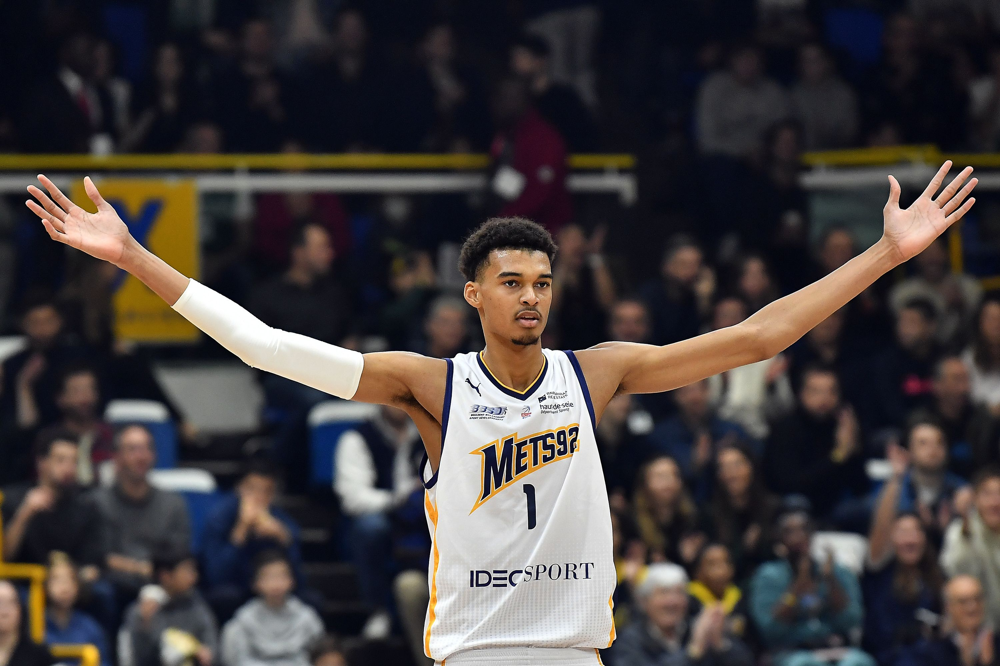
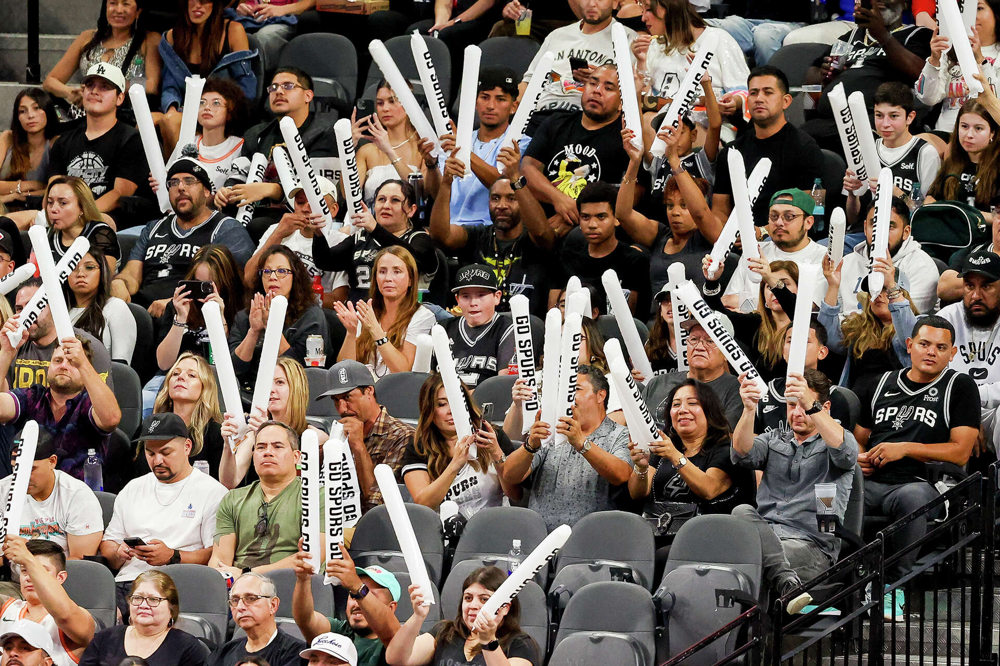
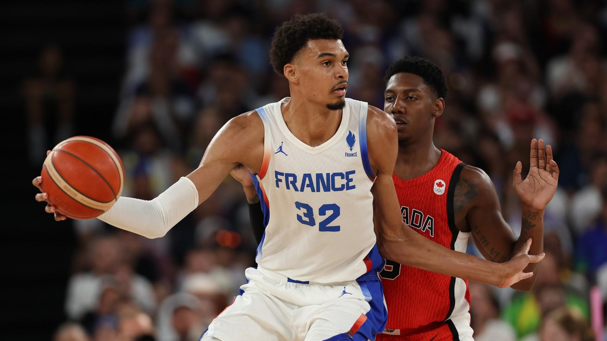

The Frenchman Has Arrived
The San Antonio Spurs' towering center has shattered the traditional timeline of NBA development, anchoring a historic defense that left voters with no choice but to award him the game's highest defensive honor. Never before have we seen a player combine an 8-foot wingspan with the lateral agility of a guard, fundamentally altering how opposing offenses approach the paint. He doesn't just block shots; he erases entire passing lanes and forces elite scorers to completely abort their drives out of sheer panic.
Now, the postseason pressure cooker presents its ultimate test. Standing between the French prodigy and the Larry O'Brien Trophy is a relentless Oklahoma City Thunder squad, a team built on explosive backcourt play and lethal perimeter shooting. It is a clash of basketball philosophies and a showcase of the league's brightest young icons. If San Antonio can stifle OKC's drive-and-kick scheme, the path to the ultimate glory lies directly ahead.

To appreciate the magnitude of this moment, we have to look at the history books. Winning a title as the definitive engine of a team at 22 years old is a feat reserved exclusively for the pantheon of basketball legends. The Thunder pose a unique threat because they do not rely on a traditional interior big man. They will attempt to pull the young Frenchman away from the basket, forcing him to defend in space and testing his conditioning over a grueling seven-game stretch.

If the Spurs advance past this Western Conference gauntlet, the basketball world will shift on its axis. We are no longer talking about the future of the NBA; we are living in it. Securing a championship at this stage of his career wouldn't just validate the immense hype that followed him from France—it would instantly kickstart a new hardwood dynasty. The world is watching to see if the young titan can finish the climb.
